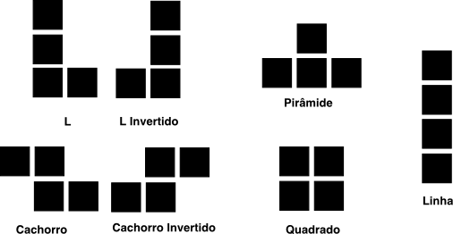
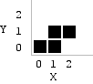
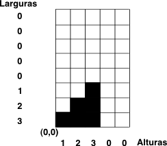

Programação Funcional e Lógica - Prof. Ricardo da Rocha
</p>
<h1>Tarefa 5 de Programação Funcional e Lógica</h1>
<h1>Visão geral</h1>
<p>Nesta tarefa você deverá implementar em Haskell o jogo <strong>Tetris</strong>. O objetivo desta atividade é fazer com que o aluno explore o frameworks mais complexos em Haskell. Essa atividade é baseada um uma tarefa proposta pro <a href="http://cslibrary.stanford.edu/112/">Nick Parlante</a>.</p>
<h1>Descrição</h1>
<p>O objetivo deste trabalho é implementar uma versão Haskell do conhecido jogo Tetris. A implementação deste trabalho ocorrerá em duas partes:</p>
<ul>
<li>Na <strong>primeira parte</strong>, cada você desenvolverá os dados e operações para implementação do jogo, seguindo estritamente as regras e indicações feitas neste documento. Essa parte envolve a construção do tipo <code>PecaTetris</code>, que representa uma peça de jogo Tetris e <code>GradeTetris</code>, que representa o estado de um jogo em si (peças colocadas e em movimento).</li>
<li>Na <strong>segunda parte</strong> de implementação, você deverá implementar a interface com o usuário utilizando framework de interface com usuário baseada em texto chamado <a href="http://hackage.haskell.org/package/brick">Brick</a>.</li>
</ul>
<p>Se você não conhece o jogo Tetris, ou não lembra se suas regras, experimente jogar uma das milhares de versões na Internet. Se você jogar muito, <a href="http://en.wikipedia.org/wiki/Tetris_effect">pode até começar a sonhar com o jogo</a>.</p>
<h1>Atualizações nesta página</h1>
<ul>
<li><strong>13/nov</strong>: <a href="#pecatetris">acrescimo de informação</a> sobre o tipo <code>PecaTetris</code>.</li>
<li><strong>1/nov</strong>: esta tarefa está no ar!</li>
<li><strong>16/nov</strong>: acréscimo de <a href="introducao-ao-brick.html">tutorial com instruções sobre instalação e uso do Brick</a></li>
</ul>
<h2>Parte 1: Funcionalidade do Jogo Tetris</h2>
<h3>PecaTetris</h3>
<p>Implemente as funções de manipulação para um tipo <code>PecaTetris</code> que implementa os blocos de um jogo Tetris. Considere as seguintes peças de um jogo tradicional Tetris:</p>
<p></p>
<p>Na sua implementação, cada peça deve ser implementada como uma lista de tuplas de <code>Int</code>, na qual cada elemento da lista indica os blocos ocupado da respectiva peça usando o sistema de coordenadas indicado na figura (para uma peça "Cachorro").</p>
<p></p>
<p><a id="pecatetris"></a>
O tipo <code>PecaTetris</code> deve ser declarado conforme indicado abaixo, e cada uma das possíveis peças deve ser declarada para futuro uso no seu código. No código abaixo há um exemplo para 'pecaL`.</p>
<pre><code> data PecaTetris = Bloco [(Int,Int)]
pecaL :: PecaTetris
pecaL = (Bloco [(0,2), (0,1), (0,0), (1,0)])
</code></pre>
<p>O seu código deverá implementar as seguintes funções sobre um tipo <code>PecaTetris</code>:</p>
<ul>
<li><strong><code>largura</code></strong>: retorna a largura da peça, em número de blocos.</li>
<li><strong><code>altura</code></strong>: retorna a altura de uma peça, em número de blocos.</li>
<li><strong><code>limitesHorizontais</code></strong>: a lista de <code>Int</code> de tamanho igual largura da peça, que em cada posição possui a menor posição em que existe um bloco.</li>
<li><strong><code>proximaRotacao</code></strong>: retorna uma peça que representa a próxima rotação da peça passada como parâmetros, ou seja, rotacionada em 90 graus, sentido horário. A figura abaixo mostra as peças que devem ser retornadas quando a função <code>proximaRotacao</code> é invocada para a peça "Triângulo" em diferentes configurações.</li>
</ul>
<p></p>
<p>A sua solução deve funcionar para qualquer possível peça do jogo, e não apenas para as peças tradicionais do jogo. A solução deve ser, portanto, genérica.</p>
<p>Em caso de dúvidas em relação à interface ou funcionamento destes códigos, veja os testes de unidade desta tarefa.</p>
<h3>Grid de Estado do Tetris</h3>
<p>Implemente os algoritmos básicos (conforme regras a seguir) para manter o estado de uma grade Tetris, no qual poderão ser colocadas (ou testadas) peças implementadas na tarefa anterior. A sua implementação deverá atualizar o estado de uma grade Tetris (<code>GradeTetris</code>), determinado se:</p>
<ul>
<li>uma peça <em>pode</em> ser colocada em determinada posição</li>
<li>atualizando o estado da grade após a colocação de uma peça, fazendo com que, quando se aplicar, os blocos desapareçam e os demais sejam deslocados para baixo.</li>
</ul>
<p>A sua estrutura de dados <code>GradeTetris</code> deverá ser uma matriz de booleanos, onde cada booleano será <code>True</code> caso exista um bloco naquela posição, conforme ilustrado na figura. Não há limite na largura ou altura do grid Tetris, mas para efeito de testes pode-se considerar um tamanho de 10 blocos de largura e 20 de altura.</p>
<p></p>
<p>Além das respectivas estruturas de dados, você deverá implementar as seguintes funções:</p>
<ul>
<li><code>getBlocoEm x y</code>: retorna o bloco (<code>Bool</code>) existente na posição <code>(x,y)</code>. </li>
<li><code>setBlocoEm x y bloco</code>: coloca um bloco ou remove (dependendo do valor booleano do bloco) na posição <code>(x,y)</code>.</li>
<li><p><code>apagarLinhas</code>: Apaga as linhas da grade Tetris que estão completamente preenchidas por blocos, descendo todos os blocos para as posições removidas. Nem sempre alguma linha pode ser apagada.</p>
<p>O teste que indica se uma linha pode ser apagada é se existem blocos em todas as posições da linha. Uma vez apagados os blocos, todos os blocos acima do bloco devem "cair", como em um efeito de gravidade. Quando os blocos caem, eventualmente novas linhas podem ser preenchidas e os respectivos blocos são apagados. Portanto, o procedimento só termina quando todas as possíveis linhas são apagadas, após computado o efeito dos blocos caindo. </p></li>
<li><p><code>largura</code>: retorna a largura de uma grade Tetris (valor usado na inicialização da grade).</p></li>
<li><code>altura</code>: retorna a altura de uma grade Tetris (valor usado na inicialização da grade).</li>
<li><code>getLarguraLinha y</code>: retorna o número de blocos preenchido em uma linha.</li>
<li><code>getAlturaColuna x</code>: retorna o número de blocos preenchido em uma coluna.</li>
<li><code>getMaximaAltura</code>: retorna a maior altura da grade Tetris, considerando todas as colunas.</li>
<li><p><code>colocaPeca</code>: testa a colocação de uma peca em uma posição <code>(x,y)</code> da grade, em relação à origem <code>(0,0)</code> da peça. A peça deve ser necessariamente a peça <code>PecaTetris</code> implementada na tarefa anterior. Deve retornar um dado enumerado, indicando </p>
<ul>
<li><code>PecaColocada</code>: peça colocada sem problemas, o que significa que a peça não está tocando na base de blocos do jogo ou ela está encaixada em uma posição válida para o jogo.</li>
<li><code>PecaEncaixada</code>: peça encaixada em uma posição válida do jogo e que preencheu uma linha de blocos. </li>
<li><code>PecaForaLimites</code>: peça fora dos limites do jogo (do grid)</li>
<li><code>Incompativel</code>: peça encaixada incorretamente, ocupando com pelo menos um de seus blocos uma posição onde já havia um bloco.</li>
</ul></li>
</ul>
<p>Observe que todas essas funções deverão receber como parâmetro a grade tetris na qual elas irão operar. <strong>Esse parâmetro está subentendido não foi indicado no texto</strong>.</p>
<p>Em caso de dúvidas em relação à interface ou funcionamento destes códigos, veja os testes de unidade desta tarefa.</p>
<h3>Testes para o Código da Parte 1</h3>
<p>A massa de testes sugerida para o código desenvolvido na parte 1</p>
<ul>
<li><a href="testes/tarefa-05-tetris/Spec.hs">Spec</a></li>
</ul>
<h2>Parte 2: Interface com Usuário do Jogo Tetris</h2>
<p>Nesta parte você deverá utilizar o framework <a href="http://hackage.haskell.org/package/brick">Brick</a> para implementar a interface do jogo, levando em conta os tipos e operações implementadas na parte anterior.</p>
<p>Finalizada a parte 1, a lógica do programa que implementa o jogo é simples, conforme mostra o pseudo-código abaixo:</p>
<pre><code> Coloque uma nova peça no topo do grid (método colocarPeca de GridTetris)
Espere tempo de mover a peça
Desfazer estado do grid
Coloque a peça uma posição abaixo
Se peça ficou em posição inválida do grid (detectado via colocarPeca) então
Desfazer estado do grid
Colocar peça na última posição válida
Commit no Grid (via EstadoGridTetris)
</code></pre>
<p>Este pseudo-código não inclui a interação com o usuário, o que inclui girar as peças quando o usuário tecla <strong>Enter</strong> mas a incorporação dessa interação com o pseudo-código anterior é simples. </p>
<p>O maior trabalho será incorporar o uso do framework Brick ao seu código. Para facilitar, criei um <a href="introducao-ao-brick.html">tutorial com instruções sobre instalação e uso do Brick</a>.</p>
<h3>Recomendações importantes</h3>
<ul>
<li>Jamais iniciem a segunda parte (interface com usuário), sem finalizar a primeira.</li>
</ul>
<h1>Requisitos</h1>
<p>A sua solução deve ser implementada em um projeto <strong>Stack</strong> e deve possuir testes de unidade especificados em <a href="https://hspec.github.io/">HSpec</a>. Informação sobre o uso do Stack e HSpec:</p>
<ul>
<li><a href="../softwares.html">Instalação e uso do Stack e Testes de Unidade</a></li>
</ul>
<p>Reveja o <a href="http://inf.ufg.br/~ricardo/pfl/plano/plano-PFL-2019.2.pdf">plano da disciplina</a> na seção "PROCESSOS E CRITÉRIOS DE AVALIAÇÃO", caso seja necessário relembrar como as tarefas serão avaliadas.</p>
<p>Os seguintes requisitos devem ser satisfeitos para o seu código ter o conceito <strong>FINALIZADO</strong>.</p>
<ol>
<li>Todas as funções indicadas devem ser implementadas.</li>
<li>Todas as funções implementadas devem incluir código de teste HSpec, para além das funções indicadas acima.</li>
<li>A sua implementação deve estar em um projeto Stack.</li>
<li>O seu código deverá ser submetido pelo <a href="https://classroom.github.com/">GitHub Classroom</a>, no local indicado pelo email com o assunto: <strong><code>[PFL] submissão da tarefa 05 - Jogo Tetris</code></strong>. </li>
<li>As tarefas são individuais e nenhum tipo de cópia ou similaridade com código, seja de outro aluno, seja da Internet ou livros, será aceita.</li>
</ol>
<h1>Prazo</h1>
<p>O prazo para entrega da atividade é o dia <strong>30 de novembro</strong> (sábado). Depois desse prazo, você poderá efetuar correções na sua implementação - quando solicitadas pelo professor - em até 10 dias adicionais. </p>
<p>